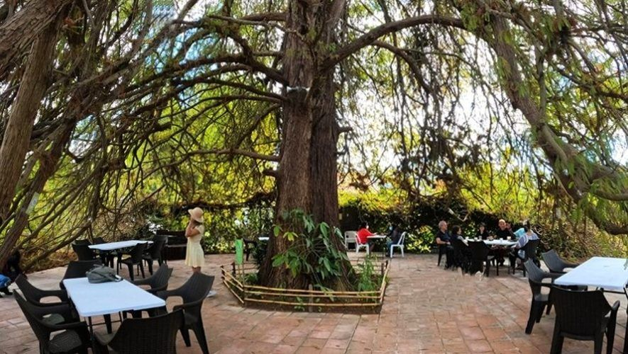
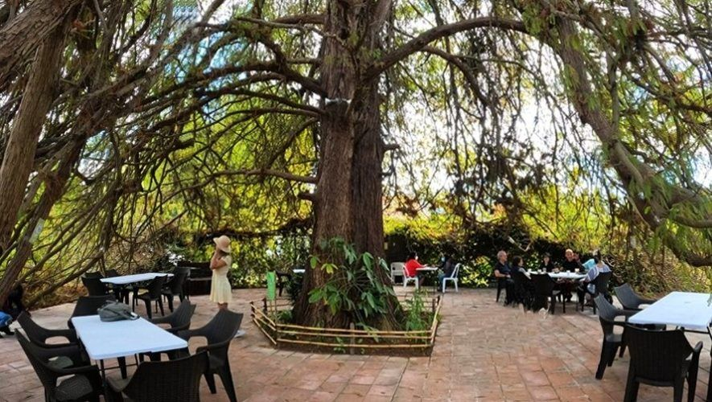

Áreas de Recreación
En Elite Way School, nos enorgullecemos de ofrecer a nuestros estudiantes un entorno de recreación excepcionalmente completo y diverso que enriquece su experiencia educativa. Nuestro campus cuenta con tres extensos jardines de descanso, meticulosamente diseñados y mantenidos para proporcionar un oasis de tranquilidad y serenidad. Estos jardines ofrecen espacios verdes exuberantes, adornados con bancos cómodos y áreas sombreadas, donde los estudiantes pueden relajarse, estudiar al aire libre o simplemente disfrutar de la belleza natural que los rodea.
Además, para aquellos que buscan refrescarse y disfrutar del sol, nuestra piscina segura ofrece el lugar perfecto para relajarse y socializar. Supervisada por personal capacitado en todo momento, nuestra piscina garantiza la seguridad y el bienestar de nuestros estudiantes mientras disfrutan de un chapuzón en un ambiente seguro y controlado.
Para los amantes del deporte, nuestro campus cuenta con una amplia gama de instalaciones deportivas de primer nivel. Desde una cancha de tenis profesional hasta una cancha de básquetbol y una cancha de fútbol americano, ofrecemos oportunidades para que nuestros estudiantes participen en una variedad de actividades deportivas y desarrollen habilidades atléticas mientras fomentan el compañerismo y la camaradería.
Dentro de nuestro colegio, nuestros estudiantes tienen acceso a una sala de recreación completamente equipada que ofrece una variedad de opciones de entretenimiento. Desde computadoras para realizar investigaciones académicas hasta televisores con consolas de juegos como PlayStation, Wii y Xbox, nuestros estudiantes pueden disfrutar de momentos de diversión y relajación en un entorno seguro y supervisado. Además, nuestra sala de recreación cuenta con una mesa de billar, cómodos sofás y una pequeña biblioteca, proporcionando un espacio acogedor donde los estudiantes pueden socializar, relajarse y nutrir sus intereses fuera del aula.
En Elite Way School, estamos comprometidos a proporcionar una experiencia educativa integral que no solo nutra el intelecto de nuestros estudiantes, sino que también fomente su bienestar emocional y su desarrollo personal en todas las áreas de la vida.